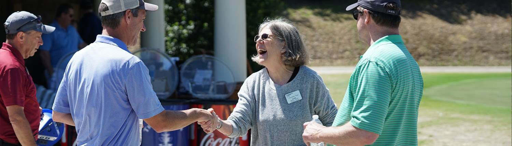

Audience & Goals
Document the people or groups that are directly involved in or reached by your project. Next, list peripherally relevant people or groups Think about the connections these people have with your topic; consider who the fans, skeptics, and partners are.

Overarching Goals
Document the people or groups that are directly involved in or reached by your project. Next, list peripherally relevant people or groups Think about the connections these people have with your topic; consider who the fans, skeptics, and partners are.
| Client |
|
| Audience |
|
| Website |
|
Specific Goals
| User | Goal | Content/Action |
|---|---|---|
| Individuals ages 65+ | Providing meals for those individuals who are unable to make food for themselves | Get them to join/sign up for the organization and become a regular visitor/member to receive meals when needed |
| Sick individuals of any age in the Charlotte area | Providing meals for those individuals who are unable to make food for themselves | Get them to join/sign up for the organization and become a visitor/member to receive during sickness |
| Regular donors and volunteers in the Charlotte area | Continued and increased financial support and hands-on help | Increase donations, encourage other volunteers to join, and increase encouragement and outreach to members/meal recipients |
| Individuals of any age in the Charlotte area who want to volunteer, donate, or sponsor | Inform individuals of duties, mission, and goals; inform them of what they can do to help | Have engaging yet simple interactions on website for those who want to become a sponsor/donor or volunteer to help the organization run smoothly and expand |